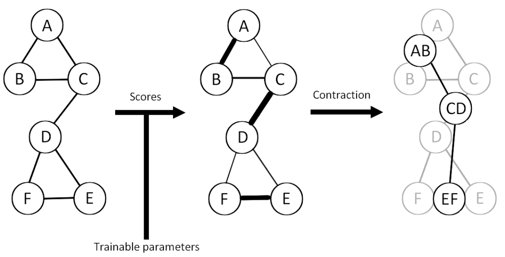

Framework
In this section, we will explain how our model works. We will cover the generic architecture of a graph neural network (GNN), as well as provide more in-depth explanations about different convolution and pooling techniques.
Generic Architecture of a GNN
A GNN is a neural network architecture designed to operate on graph-structured data. The generic architecture of a GNN consists of several layers, each of which performs a specific function.

The first layer is the input layer, which takes in the graph data and node features. The second layer is the convolution layer, which applies a convolution operation to capture local dependencies between neighboring nodes in the graph. The third layer is the local pooling layer, which reduces the dimensionality of the node representations by pooling them together within local neighborhoods. The fourth layer is the global pooling (readout) layer, which transforms the entire graph into a single vector representation. The final layer is the MLP classification layer, which produces the desired output based on the graph representation.
Convolution techniques
In this section, we will provide definitions for the main convolution techniques we consider.
Graph Convolutional Network (GCNconv)
\[h_i' = \sigma \left( \sum_{j \in \mathcal{N}_i} \frac{1}{\sqrt{|\mathcal{N}_i| |\mathcal{N}_j|}} W h_j \right)\]
W: parameters of the layer.
\(h_i\): features at node \(i\).
\(\mathcal{N}_i\): neighborhood of node \(i\).
Graph Convolutional Network is a type of graph neural network that applies a convolutional filter on the graph nodes, similar to CNNs. The intuition behind GCNconv is that it updates the features of each node by aggregating the features of its neighboring nodes, and then applying a linear transformation to the aggregated features. This process allows the GCNconv to capture the local structural information of the graph and learn node representations that are informative for downstream tasks such as node classification and link prediction.
Graph Attention Networks (GAT)
\[h'_i = \sigma\left(\sum_{j \in \mathcal{N}_i} \alpha_{ij} \mathbf{W}h_j\right)\] \(\alpha_{ij}\) : attention coefficient indicating the importance of node \(j\)’s features to node \(i\) \[\alpha_{ij} = \frac{\exp\left(\text{LeakyReLU}\left(\mathbf{a}^T[\mathbf{W}h_i \| \mathbf{W}h_j]\right)\right)}{\sum_{k \in \mathcal{N}_i} \exp\left(\text{LeakyReLU}\left(\mathbf{a}^T[\mathbf{W}h_i \| \mathbf{W}h_k]\right)\right)}\]
Graph Attention Networks (GAT) is a type of graph neural network that uses attention mechanisms to aggregate features from neighboring nodes. The intuition behind GAT is that different neighboring nodes may have different levels of importance when aggregating features for a given node. By using attention coefficients, GAT can learn to weight the contributions of each neighboring node based on their relevance to the target node. This allows GAT to capture complex dependencies between nodes and learn more expressive node representations than other graph neural networks.
Graph Isomorphism Network Convolution (GINConv)
\[\mathbf{h}^{\prime}_i = \text{MLP} \left( (1 + \epsilon) \cdot\mathbf{h}_i + \sum_{j \in \mathcal{N}_i} \mathbf{h}_j \right)\] \(\epsilon\) : learnable parameter or a fixed scalar.
Graph Isomorphism Network Convolution is a type of graph neural network that aims to maximize the representational power of a GNN. The intuition behind GINConv is to learn injective functions that map different graph structures to different representations. GINConv achieves this by using a multi-layer perceptron (MLP) to transform the features of each node and its neighbors, and then aggregating the transformed features using a summation operation. This process allows GINConv to capture the structural information of the graph and learn discriminative node representations that are useful for tasks such as graph classification and graph clustering.
Pooling Techniques
In this section, we will explain different pooling techniques used in our model.
Top-K Pooling Operator (TopKPool)
The Top-K Pooling operator retains only the top-K nodes with the highest scores, as determined by a scoring function. The scoring function can be based on various factors, such as node degree or feature importance. By retaining only the top-K nodes, Top-K Pooling reduces the dimensionality of the node representations while preserving the most important information.
Self-Attention Graph Pooling (SAGPool)
Self-Attention Graph Pooling (SAGPool) is a pooling technique that uses self-attention mechanisms to assign scores to nodes. The scores are used to select the top-K nodes for pooling, similar to Top-K Pooling. However, unlike Top-K Pooling, SAGPool takes into account the relationships between nodes when assigning scores. This allows SAGPool to capture more complex dependencies between nodes.
MEWIS Pool (Maximum Entropy Weighted Independent Set Pooling)
MEWIS Pool is a pooling technique that maximizes the Shannon Entropy of the selected nodes. The Shannon Entropy is a measure of the uncertainty or randomness of a set of nodes. By selecting nodes that maximize the Shannon Entropy, MEWIS Pool aims to capture a diverse set of nodes that cover different regions of the graph.
EDGE Pooling

EDGE Pooling is a pooling technique that pairs nodes based on scores. The scores can be based on various factors, such as node degree or feature importance. EDGE Pooling then merges the paired nodes into a single node, reducing the dimensionality of the node representations. EDGE Pooling can be seen as a form of hierarchical clustering, where nodes are merged based on their similarity.
Each of these pooling techniques has its own strengths and weaknesses, and the choice of pooling technique depends on the specific characteristics of the graph data and the desired outcome.